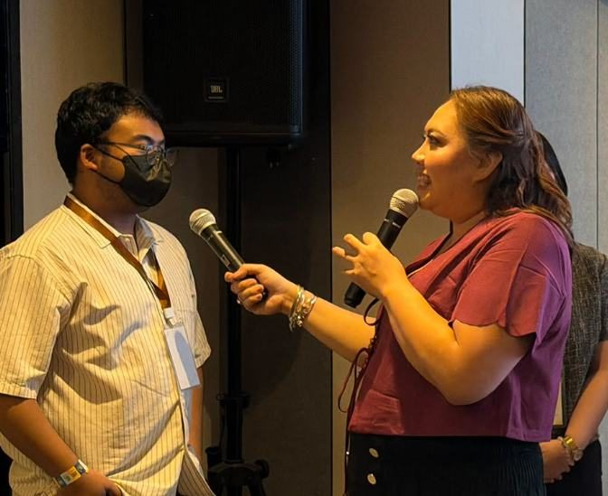
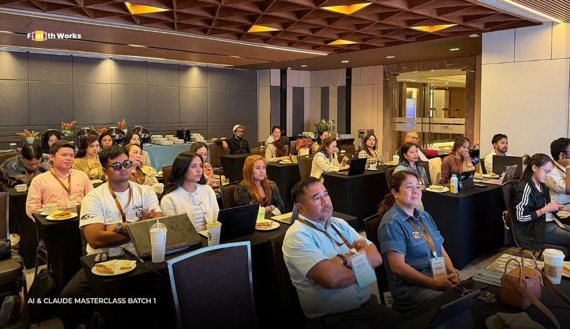
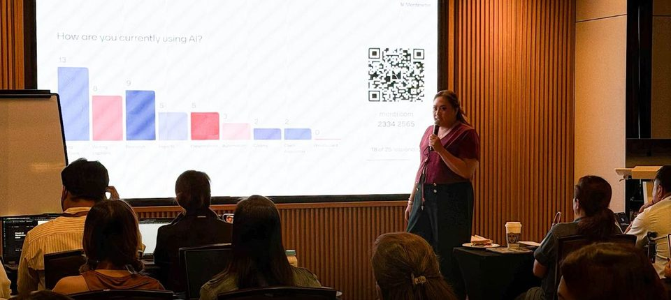

Practical education & business transformation
Learn. Implement. Scale.
Practical education, business transformation, AI, leadership and purposeful growth, in one clear place.
Now on Faith Works
02 What is Faith Works?
Faith Works is the education and business transformation arm of the Faith Works PH ecosystem.
It helps founders, professionals and organizations learn practical skills, put them into practice, and build from there.
Follow the journeyWho it's for: Individuals. Professionals. Entrepreneurs.
Founders & owners
Systems the business can run on
CEOs & executives
Lead with AI they understand
HR & talent leaders
Specific functional gains
Marketing pros
More output, same team
Operations leaders
Process that holds at scale
Consultants & coaches
Deliver more without more hours
Freelancers
Punch above their size
Event suppliers & SMEs
Stop losing leads in an inbox
No technical background required.
Every role here comes straight from past Faith Works workshops.
03 The Journey
What each stage actually means.
-
Stage 01: Learn
“I want to understand this.”
Insights · workshops · resources
-
Stage 02: Implement
“I want to apply this.”
Frameworks · templates · workflows · programs
-
Stage 03: Scale
“I want this to last.”
Systems · transformation · growth · leadership
04 Insights
Practical reading on AI, business and leadership.
More insights on this topic are on the Learn page.
05 Workshops & Events
Workshops & Events
- Workshops
- Focused, practical learning sessions.
- Events
- Masterclasses, forums and community gatherings.
07 Lifestyle & Founder
Hi, I’m Faith.
I’m a business coach, content creator and keynote speaker, and I started Faith Works to make AI feel practical, not intimidating. Before this, I built Digital Workforce Group during the pandemic, opening global opportunities for Filipino professionals.
Since then I’ve worked with more than 4,000 entrepreneurs, executives and professionals. Most days you’ll find me in a workshop, on a stage, or sharing what I’m learning on social. Come say hi.
Follow along
Meet Faith08 Community
Events. Connection. Participation.
- Events Workshops, masterclasses, forums and community gatherings.
- Connection The Faith Works Community: keep learning between events.
- Participation Photos and highlights from past Faith Works sessions.



Join the community
A space to keep learning, share what you're applying, and stay connected between events.
Follow Faith Works
Learn. Implement. Scale.
A clearer digital home for practical education, business transformation, and purposeful growth.